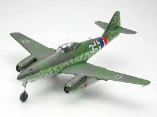
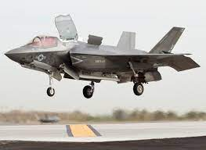
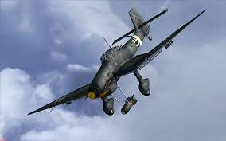

The first fighter jet in the world is the german-made Messerschmitt Me 262. The fighter jet was made during World War 2, and its first flight was in 18 July 1942. The top speed that the plane could reach was about 870 km/h, which was faster than the P-51 Mustang by almost 200 km/h. There are 2 variants of the Me 262, the fighter variant called the Schwalbe and the bomber variant called the Sturmvogel.
There has been a lot of technological advancements since the first jet. Let's take a look at the Lockheed Martin F-35 Lightning II. It boasts a Mach 1.6 speed despite only using a single engine, is capable of jamming enemy radars, and can shoot enemies that are flying behind it. Last but not least, the F-35 can hover.
Though not a jet fighter, here's a bit of information about the Junkers Ju 87, better known as the Stuka. It is a german dive bomber and its most notable feature is the 60-90 degree angle that is required to start dive bombing, and likewise, its air siren, feared by many of its targets.
Click on the image to listen to the siren